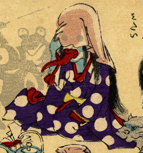

女の化物。水玉模様の紫色の着物をまとい、布で顔を隠しているが、目は布越しに透けて見えているようである。赤く長い舌を突きだしている。
出典：親書誌：U426_nichibunken_0226：化物の嫁入；バケモノノヨメイリ／日付：2010／資源識別子：U426_nichibunken_0226_0050_0000
Copyright (c)2010- International Research Center for Japanese Studies, Kyoto, Japan. All rights reserved.